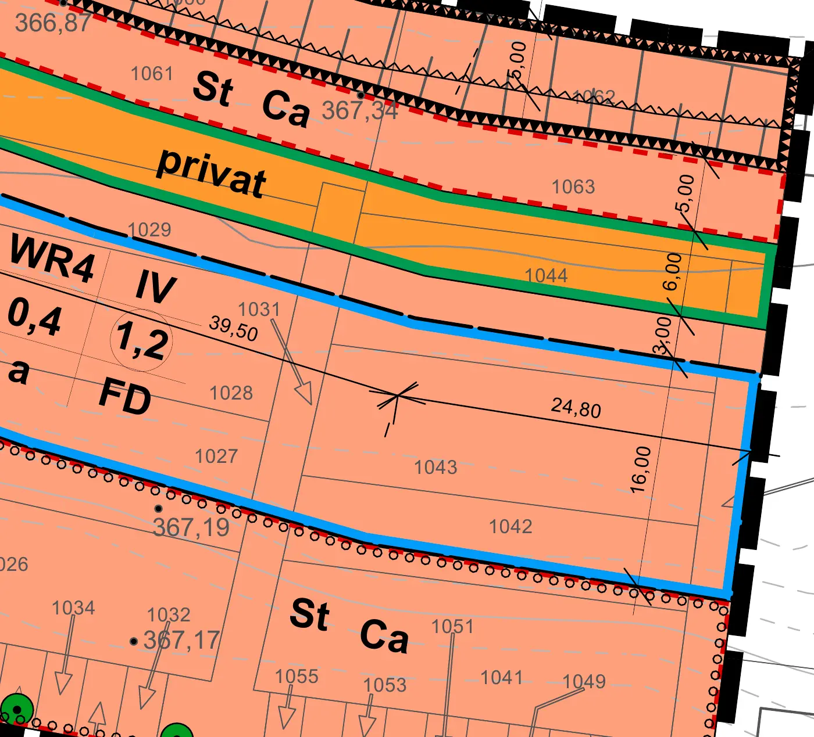
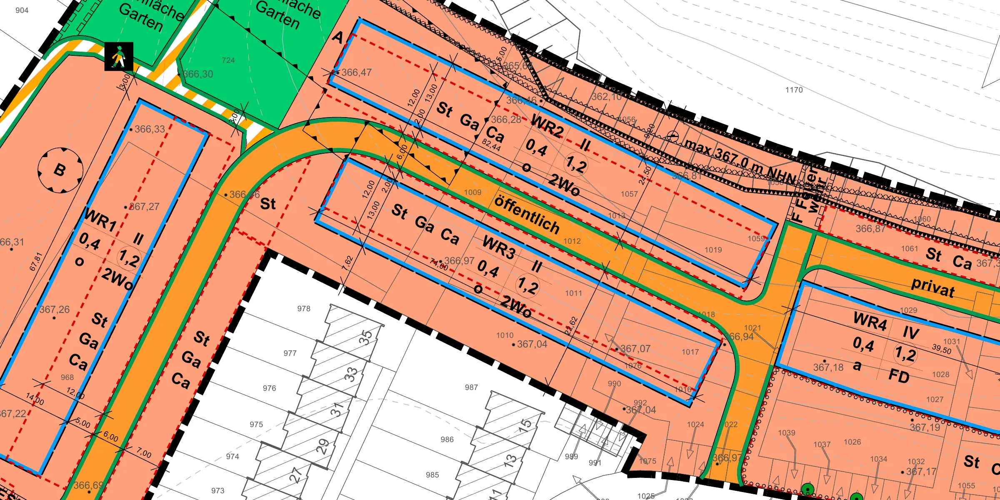
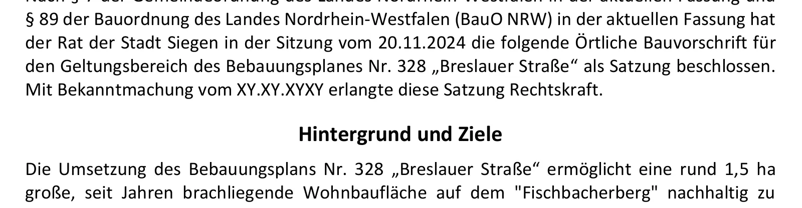
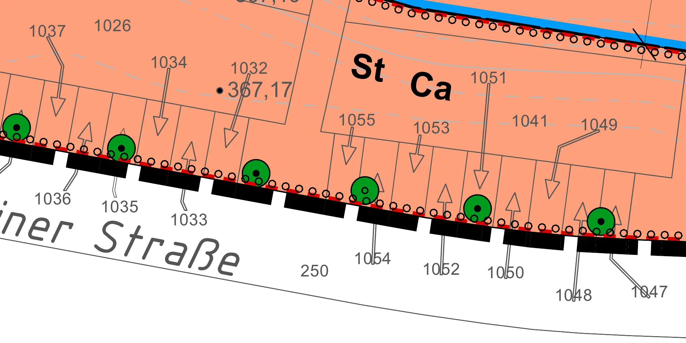
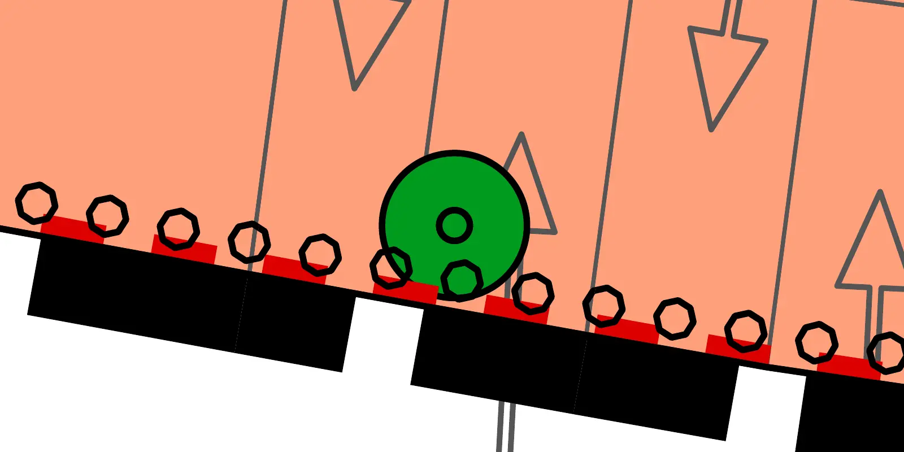

Rückfrage · Planblatt, Legende und Zeichnung
St/Ga/Ca-Flächen liegen außerhalb der Baugrenzen
Wörtlich genommen wären Stellplätze dort ausgeschlossen. Klären: Gehen die Umgrenzungsflächen als spezielle Regel vor?
Fallstudie
Sie arbeiten als sorgfältige Prüferin in einem Architekturbüro. Aufgabe: den Bebauungsplan Nr. 328 „Breslauer Straße“ der Universitätsstadt Siegen auswerten. Zwei Teile: (A) die Festsetzungen vollständig und belegt erfassen, (B) einen Plausibilitätscheck der Unterlagen durchführen.
Nichts raten. Nur aufnehmen, was in den Unterlagen steht oder sich daraus zwingend rechnen lässt. Ist etwas mehrdeutig, unvollständig oder nicht belegbar, wird daraus eine Rückfrage.
Sie liest die vier Nutzungsschablonen, die Planzeichenerklärung, die Gestaltungssatzung und die Begründung. Jeder Wert wird mit Dokument, Seite und Stelle erfasst, Bild und Textebene werden abgeglichen.
| Feld | Geschosse | GRZ | GFZ | Bauweise | Wohnungen | Dach |
|---|---|---|---|---|---|---|
| WR1 | II | 0,4 | 1,2 | o | 2Wo | |
| WR2 | II | 0,4 | 1,2 | o | 2Wo | |
| WR3 | II | 0,4 | 1,2 | o | 2Wo | |
| WR4 | IV | 0,4 | 1,2 | a | FD |

Planzeichnung, Planzeichenerklärung, Gestaltungssatzung und Begründung werden gegeneinander geprüft und mit dem rechtlichen Rahmen abgeglichen. Auch stimmige Ergebnisse werden gemeldet, damit sichtbar ist, was geprüft wurde.
GRZ 0,4 und GFZ 1,2 entsprechen § 17 BauNVO
stimmig · Rechtsrahmen
Überschreitung 50 % bis GRZ 0,6, unter Kappung 0,8
stimmig · Rechtsrahmen
Flächenbilanz: 11.000 + 1.900 + 2.300 = 15.200 m²
stimmig · Rechnung
38 Prüfungen 10 Rückfragen
Jedes Quadrat ist eine Prüfung: 11 stimmig, 17 Hinweise, 10 Rückfragen. Gezählt sind die Prüfungen, die der Nachprüfung standhalten. Von den 41 Prüfungen der KI ist eine falsch, eine überzeichnet und eine nicht nachgeprüft.

Rückfrage · Planblatt, Legende und Zeichnung
Wörtlich genommen wären Stellplätze dort ausgeschlossen. Klären: Gehen die Umgrenzungsflächen als spezielle Regel vor?

Rückfrage · Gestaltungssatzung, Seite 3, Präambel
Präambel der Satzung: „Mit Bekanntmachung vom XY.XY.XYXY erlangte diese Satzung Rechtskraft“ (Platzhalter). Ob und wann die Satzung in Kraft ist, ist aus den Unterlagen nicht belegbar.
Die KI schreibt
„In der Zeichnung sind 6 grüne Baumsymbole erkennbar, alle mit schwarzem Punkt (Symbol Erhaltung); das Anpflanzsymbol (kleiner Hohlkreis) ist in der vorliegenden Auflösung nicht zu finden.“
Bei der Prüfung zeigt sich: Das Symbol ist vorhanden, am vierten Baum von Westen an der Schweriner Straße, bei Flurstück 1054.
KI nimmt Arbeit ab. Das Urteil und die Verantwortung bleiben bei den Fachleuten im Büro, und zu jedem Ergebnis gehört eine Prüfung.


Grundfläche und Geschossfläche gelten für alle Baufelder zusammen, die Wohnbaufläche stammt aus der Flächenbilanz der Begründung. Der Körper zeigt die Hülle aus Baufenster und zulässiger Höhe.
Auswertung der KI als Excel-Datei xlsx, 29 KB, unverändert, einschließlich der Angabe, die sich bei der Prüfung als falsch erwiesen hatFazit
In dieser Fallstudie steckt das Wissen über den Prozess in der Aufgabe: was zu erfassen ist, wie jeder Wert belegt wird und wann eine Rückfrage nötig ist. Die Prüfung am Ende verlangt dasselbe Wissen.
Ein Bebauungsplan ist ein Beispiel von vielen. Überall, wo Informationen aus Unterlagen zusammengetragen und geprüft werden, kann KI vorarbeiten. In Workshops und Schulungen lernt Ihr Team, solche Aufgaben selbst zu stellen und die Ergebnisse sicher zu prüfen.
Unverbindlich und kostenlos · lukas.richter@hellomodulr.de
Quelle: Universitätsstadt Siegen, Bebauungsplan Nr. 328 „Breslauer Straße“. Beispiel, keine Rechtsauskunft. KI-Lauf am 13.10.2026 mit dem Modell claude-opus-5-5, eingefroren und protokolliert. Jede gezeigte Angabe wurde gegen die Quelle nachgeprüft.